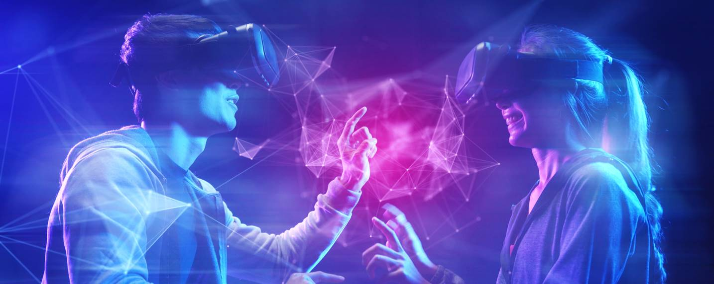
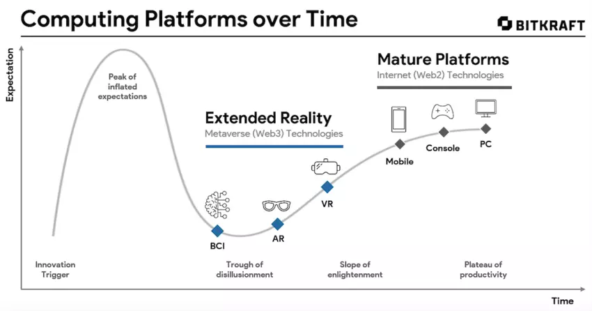

3 technologies that will shape
of the metaverse
and the human experience
The word 'metaverse' has entered common usage, but there remain different ways of conceptualizing and defining it. It will be shaped by the technology we use to access it, which could include virtual reality (VR), augmented reality (AR), and brain-computer interfaces (BCI)And major technology companies including Apple, Google, Meta Platforms (Facebook), Microsoft, Niantic, and Valve are developing the tech that will shape the future of the metaverse.

Introduction
Over the course of 2021, the word ‘metaverse’ entered common usage, inspiring a lively global debate about what it represents, whether it’s already here, and who will own it. But in 2022 we still don't have an accepted definition of what it is. This has been satirized on the tech website The Verge: “maybe you’ve read that the metaverse is going to replace the internet. Maybe we’re all supposed to live there. Maybe Facebook (or Epic, or Roblox, or dozens of smaller companies) is trying to take it over. And maybe it’s got something to do with NFTs?”
In order to explore the possible implications of the metaverse, we need to understand exactly what it is. The attempts at a definition can be categorized into three schools of thought.
The metaverse in theory
1.The metaverse as a product or service
In January 2020, author and investor Matthew Ball published the most commonly referenced description of the metaverse: “an expansive network of persistent, real-time rendered 3D worlds and simulations that […] can be experienced synchronously by an effectively unlimited number of users, each with an individual sense of presence.”
According to his definition, the metaverse is a product or service, with seven core attributes including persistence, synchronicity, and interoperability. The technology strategist Ben Thompson has argued, however, that this description is in fact not far from what the internet already is and does, only “with a 3D layer on top of it”.
2. The metaverse as a place
The metaverse has also been described as a place where users can connect, interact, and transfer themselves and their belongings across multiple digital locations. Examples that come to mind include gaming and creator platforms like Roblox, Epic Games’ Fortnite, or Manticore Games’ Core, in which players and their avatars can seamlessly transition from one virtual world to another.
3. The metaverse as a moment
More recently, the startup entrepreneur Shaan Puri came up with another definition, describing the metaverse as a point in time. Specifically, the metaverse is the moment at which our digital lives – our online identities, experiences, relationships, and assets – become more meaningful to us than our physical lives. This perspective puts the focus on the human experience, making the transition to the metaverse a sociological shift instead of a technological one.
The metaverse in practice
The third definition is compelling in part because it focuses on those who will actually build and use the metaverse: people. Answering questions about how the metaverse might look and feel —rather than pondering about its features—could prove a useful viewpoint to predict the wave of socioeconomic change that the metaverse is expected to unleash. After all, the future is built by ruthless pragmatists; not the armchair theorizers who “meander the forest of their own words”.
And if technologists are right that 2022 will separate thinkers from builders, then last years’ technical advances will produce this year’s first steps towards making the metaverse a reality. Progress will, in large part, be attributed to ever-improving graphics processing units (GPUs), photorealistic 3D engines, faster content generation through volumetric video and artificial intelligence, the increasing prevalence of cloud computing and 5G, as well as more sophisticated and better-understood blockchain infrastructure.
But from the perspective of the human experience, one development stands out above all others: extended reality (XR) technologies. These include virtual reality (VR), augmented reality (AR), and brain-computer interfaces (BCI), which together position themselves as the next computing platforms in their own right.

Extended reality (VR, AR, and BCI) technologies are emerging as the computing platforms for the metaverse.
XR has made rapid progress toward mainstream adoption, with predictions that VR and AR headsets will surpass global game console shipments as early as 2024. And just like the introduction of the personal computer and smartphones before them, broad consumer adoption of XR headsets is expected to revolutionize human digital experiences and is likely to provide the entry points of choice to the metaverse.
The question of which XR technology ultimately prevails is the subject of heated board room discussions, corporate chessboard moves, and elevated investment activity.
Today’s metaverse: virtual reality as the “digital escape”
Over the next few years, the metaverse is expected to manifest itself primarily through virtual reality – an alternative, digital world that can be used for a variety of personal and enterprise purposes. Recent high-profile announcements by Meta Platforms (formerly Facebook), Microsoft, and Sony, all suggest that headsets like Meta Quest or Sony PSVR will be the consumer choices to navigate interactive and social 3D environments.
Virtual reality is focused on creating a digital sense of presence, which many experts agree will be key to creating an attractive experience and retaining users. Mark Zuckerberg claims that the metaverse – in the form of popular videogames – is already here. Many tech experts expect to see Meta acquire a major gaming franchise in 2022, following Microsoft's $68.7 billion acquisition of Activision Blizzard and Sony's $3.6 billion purchase of Bungie. The company's Oculus app (soon to be rebranded Meta Quest) was leading the app store this holiday season, during which Meta may have sold as many as two million VR headsets.
Resource:Horizon Worlds | Meta Quest 2
This vision maintains a separation between our digital and physical selves. Virtual reality will only ever replace certain aspects of the human experience. Critics claim that relying on a handful of VR device and content manufacturers to build the metaverse will replicate, or even reinforce, the ‘walled gardens’ that exist on the internet today: distinct, closed ecosystems that are controlled by the operator.
This is a strong contrast to the future envisaged by advocates of Web 3, who believe that the metaverse should act as a counterbalance to the power held by large technology companies. It should be an opportunity to decentralize the experience, control and monetization of the internet in favor of its users (or citizens) and content creators.
Near-term metaverse: augmented reality to enhance – not replace – the human experience
“A lot of people are talking about ‘the metaverse’ these days. Coming off eighteen months of Zoom, Netflix, and Doordash, you can count me out – at least in the form that most folks are imagining,” wrote John Hanke, the CEO of tech company Niantic in a recent blog post. He argued that digital technology shouldn’t compete with physical reality, and that most people don’t enjoy prolonged experiences inside virtual worlds. According to Hanke, the metaverse should improve, rather than replace, human experiences.
See here:Niantic | Meet You Out There
He is not the only one to articulate this argument: Philip Rosedale, who oversaw Second Life, an online social platform launched in 2003, has recently argued that the metaverse is "not for everybody". But Niantic’s vision is predicated on augmented reality (AR), which unlike VR doesn’t completely cover and replace a user’s field of vision. Proponents of AR claim that the metaverse of the future will be based on synthesis of the physical and digital worlds. The latest funding round valued Niantic at $9 billion, suggesting that at least some investors agree.
Recent and forthcoming AR product launches from companies such as North (Google), Snap, Nreal, and Tilt Five demonstrate the potential of AR, alongside the limitations that need to be overcome for it to truly take off. But with companies engaging in a tech talent war, and rumours of new hardware from the likes of Apple, AR’s ‘iPhone moment’ may not be far away.
Long-term metaverse: brain-computer interfaces, the ‘final platform’
Perhaps the most far-reaching vision for the metaverse involves brain-computer interfaces (BCIs). All models of XR today rely on screens and traditional control systems, even if some devices have also worked with the senses of touch and smell. BCIs aim to replace screens and physical hardware entirely. Technology such as Neuralink requires neurosurgery to implant devices in the brain, an idea that simultaneously intrigues and discourages many potential consumers. Researchers have also used neural interfaces to restore the ability to speak and write in people that have suffered speech loss.
See here:Gabe Newell on Valve's Brain Computer Interfaces and Gaming Inside the Brain
In the context of the metaverse, the gaming and tech company Valve last year announced an exploration of BCIs, together with OpenBCI, the developers of the non-invasive Galea headset. Applications will range from gaming to healthcare. After expanding their partnership to include MIT Media Lab and Tobii, OpenBCI recently raised funding to build an “operating system of the mind”. Success would represent a major step towards a vision that truly integrates tech into the human experience.
The perils of predicting tech developments
There are many different ways in which the metaverse could develop, all dependent on an ecosystem of research, innovation, investment, and policy. Any effort to predict winners is notoriously unreliable. If the metaverse materializes, it is likely to expand into experiences that we cannot predict, and anyone who claims with certainty that they know what will happen is probably lacking the flexibility of curious optimism.
Thank you for reading ...